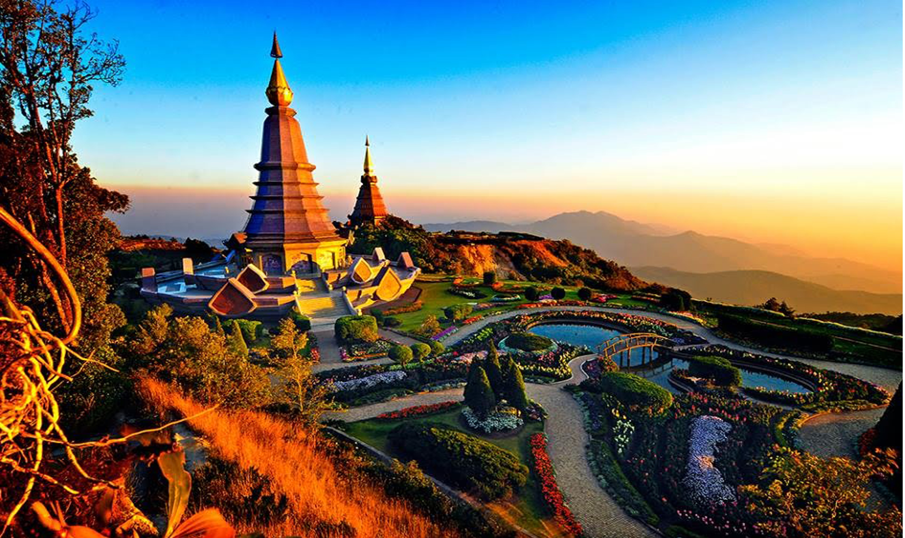
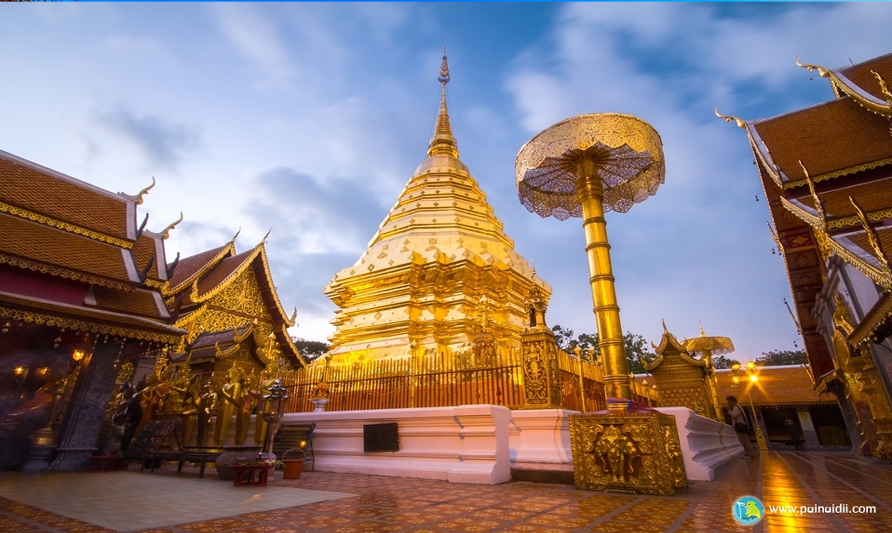

| ตราประจำจังหวัด |
สัตว์น้ำปรำจำจังหวัด |
ดอกไม้ประจำจังหวัด |
| รูปช้างเผิอก |
ปลากา |
ดอกทองกวาว |
คำขวัญ
- ดอยสุเทพเป็นศรี ประเพณีเป็นสง่า
บุปผชาติล้วนงานตา นามล้ำค่า นครพิงค์
ประวัติเชียงใหม่
- จังหวัดเชียงใหม่ (คำเมือง: Lanna-Chiang Mai.png เจียงใหม่) เป็นจังหวัดหนึ่งทางภาคเหนือของประเทศไทยครอบคลุมพื้นที่ประมาณ 20,107 ตารางกิโลเมตร ซึ่งใหญ่เป็นอันดับ 2 ของประเทศ มีประชากรราว 1.76 ล้านคน มากเป็นอันดับ 5 ของประเทศ ในจำนวนนี้เป็นประชากรที่อาศัยอยู่ในเขตเมืองและชานเมืองราว 960,000 คน โดยจังหวัดเชียงใหม่ทิศเหนือติดต่อกับรัฐฉานของพม่า
จังหวัดเชียงใหม่มีเขตเมืองที่จัดเป็นเมืองใหญ่อันดับที่สองของประเทศไทยรองจากกรุงเทพมหานคร มีประชากรในเขตเมืองและชานเมือง 960,906 คน (พ.ศ. 2553) จังหวัดเชียงใหม่แบ่งการปกครองออกเป็น 25 อำเภอ โดยมีอำเภอเมืองเชียงใหม่เป็นศูนย์กลางของจังหวัด เมื่อ พ.ศ. 2552 มีการจัดตั้งอำเภอกัลยาณิวัฒนาเป็นอำเภอลำดับที่ 25 ของจังหวัด และลำดับที่ 878 ของประเทศ ซึ่งเป็นอำเภอล่าสุดของไทย
จังหวัดเชียงใหม่มีประวัติศาสตร์อันยาวนาน เคยเป็นเมืองหลวงของอาณาจักรล้านนาแต่โบราณ มี "คำเมือง" เป็นภาษาท้องถิ่น มีเอกลักษณ์เฉพาะตัวทั้งด้านประเพณีวัฒนธรรม และมีแหล่งท่องเที่ยวจำนวนมาก โดยเริ่มวางตัวเป็นนครสร้างสรรค์ และได้รับการประกาศเป็นเมืองสร้างสรรค์ของโลกทางด้านหัตถกรรมและศิลปะพื้นบ้าน[4] เมื่อปี พ.ศ. 2560 ปัจจุบันกำลังพิจารณาสมัครเมืองมรดกโลกจากองค์การยูเนสโก[5] เชียงใหม่ยังถือเป็นศูนย์กลางด้านดาราศาสตร์ของเอเชียตะวันออกเฉียงใต้[6] โดยเป็นที่ตั้งของหอดูดาวแห่งชาติและอุทยานดาราศาสตร์แห่งชาติ



Back to top
Hobby